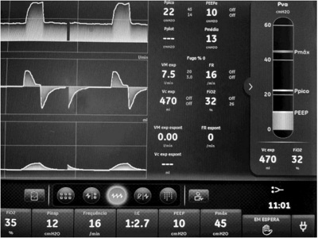
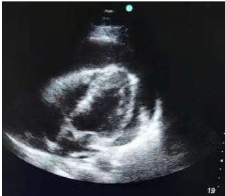
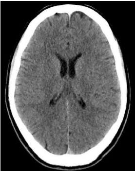
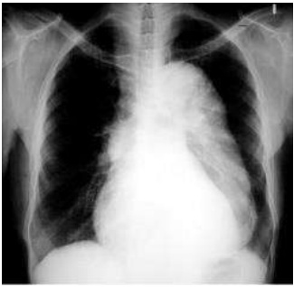
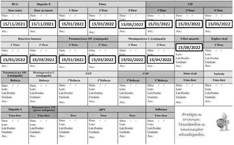
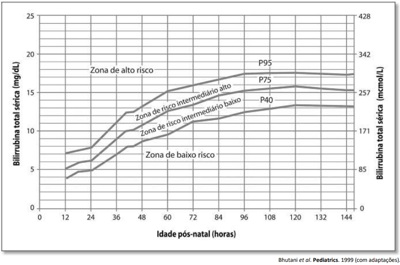
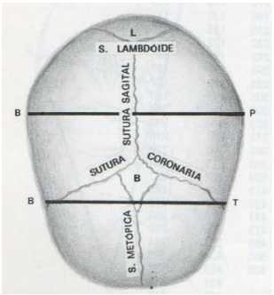
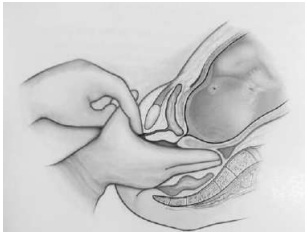

Questão 1 · Inf ectologia · Inf ecção de corrente sanguínea ICS · 4000183299Um paciente de 78 anos de idade, doente renal crônico dialítico em uso de cateter de Shilley em veia femoral à direita, encontrava-se no oitavo dia de internação na enfermaria de clínica médica da Santa Casa de São Paulo, devido à agudização da doença de base, quando evoluiu com febre e calafrios, apresentando hiperemia ao redor do cateter de diálise. A equipe prontamente realizou a coleta de três pares de hemoculturas, sendo duas de sangue periférico e uma do cateter, além de iniciar a administração de ceftazidima e vancomicina empiricamente. Após alguns dias, foi observado crescimento de em identi cação nas hemoculturas solicitadas 48 horas após os primeiros pares. O paciente encontra-se em estabilidade hemodinâmica, afebril, conforme o exame físico atual, sem sopros audíveis. Há seis dias em uso de vancomicina, está com aparente boa resposta clínica. Sem evidência de vegetações no ecocardiograma transtorácico. Entre as alternativas a seguir, assinale aquela que apresenta a melhor conduta a ser seguida no caso clínico acima.
A manter antibioticoterapia com vancomicina por mais oito dias
B descalonar antibioticoterapia para oxacilina e mantê-la por mais oito dias
C descalonar antibioticoterapia para oxacilina e solicitar ecocardiograma transesofágico
D manter vancomicina e solicitar ecocardiograma transesofágico
E manter antibioticoterapia com vancomicina por mais dezesseis dias
Questão 2 · Pneumologia · Insuf iciência Cardíaca · 4000183298Em uma consulta no ambulatório de clínica médica da Santa Casa de São Paulo, uma mulher idosa, de 72 anos de idade, hipertensa, ex-tabagista (vinte anos-maço), dislipidêmica, obesa, com evento trombótico prévio havia dois anos durante internação por covid-19, queixa-se de dispneia aos esforços físicos, edema de membros inferiores, ortopneia e dispneia paroxística noturna há dois meses. Traz consigo um ecocardiograma transtorácico recente, realizado em ritmo irregular, com fração de ejeção de 57%, aumento de átrio esquerdo, hipertensão arterial pulmonar com valor de 37 mmHg e relação VD/VE preservada. Entre as alternativas a seguir, assinale aquela que apresenta a hipótese diagnóstica mais provável da causa da dispneia na paciente retratada no caso clínico acima.
A tromboembolismo pulmonar crônico, com cor pulmonale
B insuficiência cardíaca
C doença pulmonar obstrutiva crônica com cor pulmonale
D hipertensão arterial pulmonar idiopática
E síndrome pós-covid
Questão 3 · Acidentes Vasculares Cerebrais AVC · Neurologia · Investigação Etiológica e Prof ilaxia Secundária · 4000183297Um paciente idoso, de 82 anos de idade, com acidente vascular cerebral isquêmico (AVCI) prévio, acontecido há quinze anos, e com sequelas mínimas, apresenta hipertensão arterial sistêmica e dislipidemia. Faz uso domiciliar de AAS, rosuvastatina, propranolol e hidroclorotiazida. Em consulta na clínica médica da Santa Casa de São Paulo, queixa-se de tontura provocada e episódica. Entre as alternativas a seguir, assinale aquela que apresenta a hipótese diagnóstica mais provável a ser investigada na consulta referida no caso clínico acima e a conduta posterior, respectivamente.
A acidente vascular cerebral (AVC) de fossa posterior — solicitar ressonância magnética de crânio
B hipotensão postural — avaliar a troca ou suspensão do propranolol, pois ele está mais associado ao quadro em questão, quando comparado ao diurético
C vertigem posicional paroxística benigna (VPPB), pois se trata da causa de tontura provocada e episódica mais comum — referenciar o caso ao otorrinolaringologista e iniciar terapêutica com fludrocortisona
D hipotensão postural — entre as medidas diagnósticas e terapêuticas iniciais, inclui-se avaliar a troca ou suspensão da hidroclorotiazida, pois ela está mais associada ao quadro em questão que o beta-bloqueador
E AVC de fossa posterior — encaminhar o paciente ao pronto-socorro
Questão 4 · Nef rologia · 4000183296Um paciente doente renal crônico, em piora progressiva nos últimos meses, encontrava-se no oitavo dia de internação na enfermaria de clínica médica da Santa Casa de São Paulo, devido ao diagnóstico de tromboembolismo pulmonar. Evoluiu com melhora clínica, seu escore de PESI era de baixo risco, seu ecocardiograma não apresentou alterações; troponina e BNP estavam normais. Estava em uso de heparina em bomba de infusão contínua ajustada conforme TTPA. No momento da alta hospitalar, tinha clearance de creatinina de 18 mL/min/1,73 m². Possui boas condições sociais. Entre os fármacos a seguir, o mais adequado ao paciente do caso clínico acima é
A rivaroxabana, pois promove a menor excreção renal entre os novos anticoagulantes orais (Noacs).
B apixabana, pois promove a menor excreção renal entre os Noacs.
C dabigatrana, pois promove a menor excreção renal entre os Noacs.
D marevan, pois promove baixa excreção renal e menor risco de sangramento em doentes renais crônicos.
E endoxabana, pois promove a menor excreção renal entre os Noacs.
Questão 5 · Inf ectologia · 4000183295Alta rotatividade de leitos, boa porcentagem de alta hospitalar antes das dez horas da manhã, boa avaliação do serviço de saúde por seus usuários e baixos índices de infecção hospitalar e de lesões por pressões são alguns dos indicadores de qualidade de um hospital, seja ele público ou particular. É necessário, então, evitar permanece internado sem mudança de planos, sem novas condutas essenciais e sem progredir em seu tratamento. Além dos custos para o sistema de saúde, os tromboembólicos e o número de óbitos. Considerando as alternativas a seguir, assinale aquela que apresenta uma conduta que mais provavelmente contribuirá para a ocorrência de um
A manter internada na enfermaria, por mais um dia, uma paciente de 37 anos de idade admitida devido à broncopneumonia, extubada há 24 horas e em ar ambiente, após alta da UTI e terminado o esquema de antibioticoterapia.
B manter internado, por mais três dias, um paciente com pielonefrite bilateral que deu entrada em sepse, porém melhorado, e que está em uso de ceftriaxona, a fim de aguardar o resultado de urocultura e, na ocasião da alta, guiar a antibioticoterapia.
C manter internado, por mais alguns dias, um paciente com adenocarcinoma de pulmão (pequenas células) que foi admitido por dispneia (já resolvida), para investigar piora recente e aguda de rouquidão que ocorreu durante a internação.
D manter internada, por mais dias, uma paciente jovem, previamente hígida, de dezoito anos de idade, admitida por cefaleia sem sinais meníngeos e já melhorada com uso dexametasona, para proceder à antibioticoterapia endovenosa, devido ao crescimento de meningococo em dois pares de hemoculturas, segundo aviso do laboratório.
E manter internado, por mais três dias, um paciente com boas condições sociais admitido devido à cetoacidose diabética (já revertida), para controle minucioso de glicemias.
Questão 6 · Outras causas endócrinas de hipertensão secundária · Cardiologia · 4000183294Segundo as Diretrizes Brasileiras de Hipertensão Arterial, a hipertensão arterial secundária é a forma de hipertensão arterial decorrente de uma causa identi cável, que pode ser tratada com uma intervenção especí ca, a qual determina a cura ou a melhora do controle pressórico. Nesse sentido, são indícios de hipertensão arterial secundária
A hipertensão estágio 3 antes dos trinta anos de idade ou após os 55 anos de idade; e hipertensão resistente ou refratária.
B uso de hormônios exógenos, fármacos ou outras substâncias que possam diminuir a pressão arterial; e crises de palpitações, sudorese e salivação.
C ausência de apneia obstrutiva do sono; e fácies típicas ou biotipo de doenças que cursam com hipertensão arterial.
D presença de sopros em territórios venosos exclusivamente ou massas abdominais; e assimetria ou ausência de pulsos em MMII.
E hiperpotassemia espontânea ou severa induzida por diuréticos (> 3,0 mEq/L); exame de urina anormal (hematúria glomerular [dismórfica] ou presença de albuminúria/proteinúria); diminuição do RFG estimado; e aumento da creatinina sérica ou alterações de imagem renal.
Revisar: possível letra faltando em enunciado
Questão 7 · Tratamento da Hipertensão arterial · 4000183293Conforme as Diretrizes Brasileiras de Hipertensão Arterial, um dos objetivos específicos do tratamento do paciente hipertenso é obter o controle pressórico, alcançando-se a meta de pressão arterial previamente estabelecida. Tal meta deve ser definida individualmente, sempre se considerando a idade e a presença de doença cardiovascular ou de seus fatores de risco. Quanto a esse tema, assinale a alternativa correta.
A Nos hipertensos de risco cardiovascular baixo ou moderado, a meta de tratamento é alcançar valores de pressão arterial inferiores a 120 mmHg × 70 mmHg.
B No hipertenso com doença arterial coronariana, a meta terapêutica é obter valores de pressão arterial inferiores a 130 mmHg × 80 mmHg, mas a pressão arterial diastólica deve ser mantida com valores acima de 70 mmHg.
C Para os hipertensos com insuficiência cardíaca ou com episódio prévio de acidente vascular encefálico, o tratamento anti-hipertensivo deve ser titulado até alcançar a meta de pressão arterial abaixo de 110 mmHg × 80 mmHg, e a concomitância de doença arterial coronariana e idade avançada, comum em tal situação, ainda demanda a redução da pressão arterial para até 120 mmHg × 70 mmHg.
D Nos hipertensos com doença renal crônica, o objetivo do tratamento é alcançar pressão arterial inferior a 130 mmHg × 80 mmHg, sem necessidade de monitorização de eventos adversos, especialmente redução da função renal e alterações eletrolíticas.
E No tratamento da hipertensão, os indivíduos diabéticos devem buscar manter valores de pressão arterial abaixo de 130 mmHg × 80 mmHg, preferencialmente com redução acentuada da pressão arterial para valores inferiores a 120 mmHg × 70 mmHg.
Questão 8 · Inf ectologia · 4000183292O Manual de Recomendações para o Controle da Tuberculose no Brasil (2ª ed.), publicado pelo Ministério da Saúde, define que a probabilidade de uma pessoa saudável se infectar ao ser exposta ao bacilo da tuberculose é de 30%. As pessoas infectadas, em geral, permanecem saudáveis por muitos anos, com imunidade parcial ao bacilo, em uma condição conhecida como infecção latente pelo população mundial estar infectada com na população em geral. Considerando esse assunto, assinale a alternativa que apresenta um exemplo de população para a qual essa investigação é indicada e que potencialmente se beneficiará do tratamento preconizado.
A adultos que tiveram contato, nos últimos dois anos, com paciente com a forma pulmonar e miliar/disseminada da tuberculose.
B pessoas portadoras do HIV com contagem de CD4+ abaixo de cinquenta células por metro cúbico.
C pessoas em uso de inibidores de TNF alfa ou corticosteroides (equivalente a > 15 mg/dia de prednisona por mais de um mês)
D indivíduos no período pós-transplante que farão terapia imunossupressora.
E profissionais de saúde e pessoas que vivem ou trabalham no sistema prisional ou em instituições de longa permanência, salvo médicos e enfermeiros.
Questão 9 · Síndrome de Lise Tumoral SLT · Síndrome de Lise Tumoral · Síndrome de lise tumoral SLT · 4000183291A síndrome de lise tumoral é caracterizada pela destruição maciça de células malignas e consequente liberação do seu conteúdo no espaço extracelular. Embora possa ocorrer de modo espontâneo, a síndrome de lise tumoral aparece, e m geral, logo após o início do tratamento com agentes quimioterápicos citotóxicos. A primeira classificação foi desenvolvida por Hande e Garrow, em 1993, e, recentemente, Cairo e Bishop a modi caram. Conforme os critérios mais recentes para o diagnóstico dessa síndrome, é necessário que o paciente apresente, de três dias antes até sete dias depois do tratamento, pelo menos duas das seguintes alterações:
A ácido úrico ≥ 5 mg/dL ou com aumento > 25% do valor de base; potássio ≥ 8 mEq/L ou com aumento > 25% do valor de base; fósforo ≥ 4,5 mg/dL ou com aumento > 25% do valor de base; e(ou) cálcio total ≤ 7 mg/dL ou com redução > 25% do valor de base.
B ácido úrico ≥ 8 mg/dL ou com aumento > 25% do valor de base; potássio ≥ 6 mEq/L ou com aumento > 25% do valor de base; fósforo ≥ 9 mg/dL ou com aumento > 25% do valor de base; e(ou) cálcio total > 7 mg/dL ou com aumento > 25% do valor de base.
C ácido úrico ≥ 5 mg/dL ou com aumento > 25% do valor de base; potássio ≥ 8 mEq/L ou com aumento > 25% do valor de base; fósforo ≥ 9 mg/dL ou com aumento > 25% do valor de base; e(ou) cálcio total > 7 mg/dL ou com aumento > 25% do valor de base.
D ácido úrico ≥ 8 mg/dL ou com aumento > 25% do valor de base; potássio ≥ 6 mEq/L ou com aumento > 25% do valor de base; fósforo ≥ 4,5 mg/dL ou com aumento > 25% do valor de base; e(ou) cálcio total ≤ 7 mg/dL ou com redução > 25% do valor de base.
E ácido úrico < 8 mg/dL ou com redução > 25% do valor de base; potássio < 6 mEq/L ou com redução > 25% do valor de base; fósforo < 4,5 mg/dL ou com redução > 25% do valor de base; e(ou) cálcio total > 7 mg/dL ou com aumento > 25% do valor de base.
Questão 10 · Alterações eletrocardiográf icas mais comuns · 4000183290Uma paciente de 71 anos de idade, sem antecedentes patológicos conhecidos, apresentou, subitamente, vômitos, hipertensão arterial, polaciúria e confusão mental. Durante a consulta, foi realizado eletrocardiograma, que, a primeira vista, não evidenciou anormalidades. O ritmo era sinusal e a frequência cardíaca, assim como as ondas P, QRS e T, estavam normais. Uma análise mais minuciosa identi cou alterações que sugerem encurtamento do intervalo QT. A imagem a seguir representa o eletrocardiograma dessa paciente. Assinale a alternativa que apresenta a alteração hidroeletrolítica mais provável no caso clínico acima.

A hipocalemia
B hipercalemia
C hipomagnesemia
D hipocalcemia
E hipercalcemia
Questão 11 · Cef aleia por Hipotensão Liquórica · Neurologia · Líquor e Ventrículos · 4000183289Um paciente de 45 anos de idade, que tinha realizado cirurgia de exérese de tumor de hipó se havia sete dias, via transfenoidal, compareceu ao pronto-socorro com queixa de cefaleia intensa, febre de 38,5 oC e rinorreia clara e volumosa. Estava consciente, orientado, sem sinais localizatórios. Iniciou-se antibioticoterapia endovenosa e foi realizada internação para investigação diagnóstica. Considerando esse caso hipotético, assinale a alternativa que apresenta a medicação que deve ser utilizada junto ao tratamento dessa complicação.
A dexametasona
B furosemida
C acetazolamida
D manitol
E desferroxamina
Questão 12 · Intoxicações Exógenas · 4000183288Uma mulher de 56 anos de idade foi levada inconsciente ao hospital pelo SAMU. Na entrada, apresentava-se sonolenta, e seus dados eram os seguintes: frequência cardíaca de 40 bpm; pressão arterial de 100 mmHg x 55 mmHg; saturação de 97%; pupilas mióticas pouco fotorreagentes. O restante do exame físico resultou normal. Durante seu tratamento, a paciente evoluiu com FC de 120 bpm, ausculta com estertores crepitantes bilaterais difusos e saturação de 85%. Assinale a alternativa que apresenta, respectivamente, o quadro provavelmente associado a esse caso clínico e a medicação indicada.
A síndrome anticolinérgica; atropina
B edema pulmonar cardiogênico; flumazenil
C edema pulmonar hipertensivo; dexametasona
D edema pulmonar cardiogênico; adrenalina
E edema pulmonar não cardiogênico; naloxona
Questão 13 · Nef rologia · 4000183287Uma paciente de 65 anos idade, com antecedentes de hipertensão e diabetes, deu entrada no pronto-socorro, e seus dados eram os seguintes: paciente sonolenta e taquidispneica; MEG; escala de coma Glasgow 7; FC de 120 bpm; frequência respiratória (FR) de 40 ipm; PA igual a 100 mmHg × 55 mmHg; BRNF 2T sem sopros; MV+ bilateral sem RA. Exame abdominal prejudicado pelo neurológico. Foram colhidos exames, que revelaram o seguinte: pH = 7,32; pCO₂ = 22 mmHg; bicarbonato = 12; pO₂ = 100; saturação = 99%; creatinina = 1,5; ureia = 40 mg/dL (normal: até 40); ácido úrico = 10 (referência para mulheres: 2,4 – 5,7); HB = 10; leucócitos = 10.000; e plaquetas = 80.000. Considerando o caso clínico, assinale a alternativa que apresenta o distúrbio ácido-base compatível com o quadro apresentado.
A acidose metabólica simples
B acidose respiratória simples
C distúrbio misto (acidose metabólica e alcalose respiratória)
D distúrbio misto (acidose respiratória e alcalose metabólica)
E distúrbio misto (acidose metabólica e acidose respiratória)
Questão 14 · Endocrinologia · 4000183286Uma paciente de 65 anos idade, com antecedentes de hipertensão e diabetes, deu entrada no pronto-socorro, e seus dados eram os seguintes: paciente sonolenta e taquidispneica; MEG; escala de coma Glasgow 7; FC de 120 bpm; frequência respiratória (FR) de 40 ipm; PA igual a 100 mmHg × 55 mmHg; BRNF 2T sem sopros; MV+ bilateral sem RA. Exame abdominal prejudicado pelo neurológico. Foram colhidos exames, que revelaram o seguinte: pH = 7,32; pCO₂ = 22 mmHg; bicarbonato = 12; pO₂ = 100; saturação = 99%; creatinina = 1,5; ureia = 40 mg/dL (normal: até 40); ácido úrico = 10 (referência para mulheres: 2,4 – 5,7); HB = 10; leucócitos = 10.000; e plaquetas = 80.000. Considere que um familiar tenha relatado ao médico que a paciente já tinha recebido, havia dois anos, os diagnósticos relatados e estava bem compensada, fazendo uso das seguintes medicações: metformina 750 mg/dia; ác ido acetilsalicílico (AAS) 200 mg; furosemida 40 mg; e losartana 40 mg/dia. Considerando as informações apresentadas, assinale a alternativa que apresenta a principal hipótese diagnóstica para essa paciente.
A cetoacidose diabética
B insuficiência renal devido ao uso inadvertido de losartana
C acidente vascular cerebral
D intoxicação por ácido acetilsalicílico
E sepse de foco urinário
Questão 15 · Ventilação mecânica · Pneumologia Intensiva · Pneumologia · 4000183285Uma paciente de 65 anos idade, com antecedentes de hipertensão e diabetes, deu entrada no pronto-socorro, e seus dados eram os seguintes: paciente sonolenta e taquidispneica; MEG; escala de coma Glasgow 7; FC de 120 bpm; frequência respiratória (FR) de 40 ipm; PA igual a 100 mmHg × 55 mmHg; BRNF 2T sem sopros; MV+ bilateral sem RA. Exame abdominal prejudicado pelo neurológico. Foram colhidos exames, que revelaram o seguinte: pH = 7,32; pCO₂ = 22 mmHg; bicarbonato = 12; pO₂ = 100; saturação = 99%; creatinina = 1,5; ureia = 40 mg/dL (normal: até 40); ácido úrico = 10 (referência para mulheres: 2,4 – 5,7); HB = 10; leucócitos = 10.000; e plaquetas = 80.000. Considere que a paciente tenha evoluído com necessidade de ventilação mecânica, sendo colocada no modo ventilatório, conforme apresentado na figura a seguir. Nesse caso, a paciente está sendo ventilada no modo

A assistido-controlado, ciclado à pressão, limitado a tempo.
B controlado, ciclado à pressão, limitado a tempo.
C assistido-controlado, ciclado a tempo, limitado à pressão.
D controlado, ciclado a tempo, limitado à pressão.
E espontâneo, ciclado à pressão, limitado a tempo.
Questão 16 · Neurologia · Cuidados paliativos · 4000183284Uma mulher de setenta anos de idade, acompanhada de seus familiares, foi admitida no pronto-socorro com quadro de dispneia. Durante a investigação inicial, foi realizada tomografia de tórax, que evidenciou uma imagem sugestiva de neoplasia pulmonar primária em estado avançado. A paciente estava consciente e orientada, de modo que a equipe realizou a comunicação de notícias difíceis conforme o protocolo SPIKES. Acerca das etapas do referido protocolo no caso clínico acima, assinale a alternativa correta.
A Na etapa
B Na etapa
C Na etapa
D Na etapa
E Na etapa
Questão 17 · Cardiologia · Quadro clínico · 4000183283Um paciente de 28 anos de idade foi encaminhado para a sala de emergência com relato de desconforto respiratório. Na admissão, veri cou-se pressão arterial de 70 mmHg × 40 mmHg, frequência cardíaca de 130 bpm, frequência respiratória de 20 ipm e saturação de O₂ igual a 95% em ar ambiente. Foi realizada uma ultrassonogra a à beira do leito. Abaixo está representada a imagem do corte quatro câmaras. A partir do caso clínico acima, assinale a alternativa que apresenta o quadro clínico mais provável do paciente.

A turgência jugular, alternância elétrica no eletrocardiograma e antecedentes de tuberculose
B antecedentes de asma, sibilos difusos e tempo expiratório prolongado
C empastamento em panturrilha direita, eletrocardiograma com S1Q3T3 e antecedentes de imobilização prolongada
D edema de mucosas e sibilos há dez minutos e antecedentes de alergia alimentar grave a corante
E antecedentes de transtorno de ansiedade generalizada, tremores e sensação de morte iminente após discussão familiar
Questão 18 · Encef alopatia de WernickeKorsakof f · Quadro Clínico · Neurologia · 4000183282Um homem de quarenta anos de idade, em situação de rua, foi levado pelo SAMU ao hospital, devido a rebaixamento do nível de consciência em via pública. Na admissão, foram verificados sinais de desnutrição importante, hálito etílico e glicemia de 25 mg/dL. O paciente foi tratado exclusivamente com glicose endovenosa, evoluindo com melhora do nível de consciência e surgimento de confusão mental, nistagmo e ataxia. Foi realizada uma tomogra a de crânio, cujo resultado está representado abaixo. Com relação ao caso clínico acima, assinale a alternativa que apresenta, respectivamente, o diagnóstico mais provável e o tratamento indicado ao paciente.

A encefalopatia de Wernicke — reposição de tiamina
B hematoma epidural — craniectomia descompressiva
C deficiência de vitamina A — reposição de retinol
D hemorragia intraparenquimatosa — derivação ventricular
E esclerose lateral amiotrófica — plasmaférese
Questão 19 · Tratamento da dissecção aórtica tipo A · Cardiologia · 4000183281Um homem de 62 anos de idade, com antecedentes de hipertensão e diabetes, procurou o pronto-socorro com relato de dor torácica intensa, lancinante, irradiada para o dorso havia uma hora. No exame, o paciente apresentava fácies de dor, frequência cardíaca de 85 bpm e pressão arterial de 160 mmHg × 80 mmHg. Inicialmente, ele foi submetido a uma radiogra a de tórax, cujo resultado está reproduzido a seguir. Após o exame inicial, a principal hipótese diagnóstica foi confirmada pela angiotomografia. Nesse caso clínico, a conduta medicamentosa essencial na sala de emergência deve ser composta de

A diazepam, anlodipino e captopril.
B heparina não fracionada e morfina.
C ácido acetilsalicílico, metoprolol e morfina.
D metoprolol, nitroprussiato e morfina.
E ceftriaxona e claritromicina.
Questão 20 · Cirurgia · 4000183280Um homem de 52 anos de idade, com antecedentes de hiperplasia prostática benigna, procurou o pronto-atendimento com relato de dor abdominal e anuria havia um dia. Na admissão, veri cou-se frequência cardíaca de 70 bpm, pressão arterial de 130 mmHg × 80 mmHg e saturação de O2 igual a 96%. O paciente apresentava-se em bom estado geral, consciente e orientado, hidratado, sem alterações cardiovasculares ou respiratórias. No exame abdominal, identi cou-se dor e distensão em região hipogástrica. Os exames laboratoriais estão listados abaixo. Assinale a alternativa que apresenta a conduta inicial mais adequada para o caso clínico acima.
A analgesia e alta com encaminhamento para ambulatório de doença renal crônica
B ultrassonografia de rins e vias e cateterismo vesical
C hidratação vigorosa e antibioticoterapia
D hemodiálise de emergência por anuria refratária
E biópsia renal para determinar a etiologia da doença renal crônica
Questão 21 · Cirurgia · 4000183279Acerca da hérnia inguinocrural, assinale a alternativa correta.
A Pelo exame físico associado aos exames de imagem, apesar de serem sensíveis e específicos para o diagnóstico de hérnia, não é possível distinguir, de forma confiável, as hérnias inguinais das crurais.
B O diagnóstico mais comum de um tumor na região inguinocrural em gestantes é o de hérnia inguinal.
C As hérnias crurais ocorrem, aproximadamente, quatro vezes menos em mulheres do que em homens.
D O tratamento cirúrgico é indicado para mulheres, gestantes ou não gestantes, com hérnia inguinocrural, seja ela sintomática ou assintomática.
E O ultrassom deve ser o exame inicial nos casos em que a história clínica é condizente com hérnia e o exame físico é vago; na persistência da dúvida diagnóstica, a tomografia computadorizada é melhor que a ressonância nuclear magnética.
Questão 22 · Verruga viral · Inf ectologia · 4000183278Considere que os itens a seguir correspondam a manifestações clínicas na região perianal. I. condiloma acuminado II. papulose bowenoide III. tumor de Buschke-Lowestein IV. doença de Bowen V. neoplasia intraepitelial anal Estão relacionadas à infecção pelo papilomavírus humano (HPV) as manifestações indicadas
A nos itens I e IV, apenas.
B nos itens II e V, apenas.
C nos itens I, III e IV, apenas.
D nos itens II, III e V, apenas.
E em todos os itens.
Questão 23 · Lesão meniscal · 4000183277Entre pacientes com lesão traumática de menisco dos joelhos, o paciente ideal para a realização de uma sutura meniscal será um paciente jovem com lesão
A longitudinal na zona vermelha-vermelha, procedendo-se à reconstrução do ligamento cruzado anterior associada no mesmo ato cirúrgico.
B longitudinal na zona branca-branca, sem reconstrução do ligamento cruzado anterior associada no mesmo ato cirúrgico.
C radial na zona branca-branca, sem reconstrução do ligamento cruzado anterior associada no mesmo ato cirúrgico.
D radial na zona branca-branca, procedendo-se à reconstrução do ligamento cruzado anterior associada no mesmo ato cirúrgico.
E horizontal na zona vermelha-vermelha, sem reconstrução do ligamento cruzado anterior associada no mesmo ato cirúrgico.
Questão 24 · Princípios de Diagnóstico e Tratamento de Fraturas · 4000183276No tratamento cirúrgico de fraturas dos ossos do antebraço em adultos, o cirurgião deve realizar redução
A anatômica e, sempre que possível, compressão interfragmentária com estabilidade absoluta, já que o tratamento das fraturas de antebraço segue os mesmos princípios do tratamento das fraturas articulares.
B anatômica e, sempre que possível, estabilidade relativa com uso de tutor interno, já que o tratamento das fraturas de antebraço segue os mesmos princípios básicos das demais fraturas diafisárias.
C funcional e, sempre que possível, compressão interfragmentária com estabilidade absoluta, já que o tratamento das fraturas de antebraço segue os mesmos princípios do tratamento das fraturas articulares.
D funcional e, sempre que possível, estabilidade relativa com uso de tutor interno, já que o tratamento das fraturas de antebraço segue os mesmos princípios básicos das demais fraturas diafisárias.
E funcional e, sempre que possível, estabilidade relativa com uso de imobilização gessada, já que o tratamento das fraturas de antebraço segue os mesmos princípios básicos das demais fraturas diafisárias.
Questão 25 · Cirurgia · 4000183275Assinale a alternativa que apresenta corretamente as características da ssura anal crônica típica (não relacionada à doença inflamatória intestinal).
A mais de seis semanas com dor, sangramento, ulceração posterior, hipertonia esfincteriana, papila hipertrófica e plicoma sentinela
B menos de seis semanas com dor, abaulamento anal, ulceração anterior, hipertonia esfincteriana e papila hipertrófica
C mais de seis semanas com sangramento, plicoma sentinela, ulceração lateral, hipotonia esfincteriana e secreção purulenta
D mais de seis semanas com dor, secreção purulenta, ulceração posterior e anterior, hipotonia esfincteriana e papila hipertrófica
E menos de seis semanas com dor, sangramento, ulceração posterior, hipertonia esfincteriana, plicoma sentinela e secreção purulenta
Questão 26 · Cirurgia · 4000183274Um homem de 25 anos de idade deu entrada no pronto-socorro com pneumotórax espontâneo de grande volume à direita, sendo indicada drenagem pleural. Com base nesse caso clínico hipotético, assinale a alternativa correta
A A causa mais provável desse quadro é a ruptura espontânea do esôfago.
B O dreno deve ser inserido na região torácica mais caudal possível, em torno do 10º espaço intercostal, para facilitar a drenagem de sangue eventualmente presente na cavidade.
C Durante a realização da drenagem pleural, deve-se evitar a exploração digital da cavidade pleural, devido ao risco de lesão pulmonar ou de órgãos mediastinais.
D A aspiração contínua com pressão negativa de 15 a 20 cmH₂O é de fundamental importância para a reexpansão pulmonar e deverá ser instalada tão cedo quanto possível.
E Para que o dreno possa ser retirado, o pulmão deverá estar adequadamente expandido e não deverá haver borbulhamento no frasco coletor durante a tosse.
Questão 27 · Clínica Médica · Cirurgia · 4000183273Quanto aos princípios de oncologia, assinale a alternativa correta.
A O estadiamento TNM é uma forma de definir a extensão da doença e os possíveis tratamentos.
B Os marcadores tumorais são auxiliares que são úteis somente para o seguimento.
C A disseminação dos tumores ocorre somente por via hematogênica e linfática.
D O tratamento cirúrgico é feito, em geral, apenas com intenção de melhorar a qualidade de vida do paciente, com resultados fracos de cura.
E A medida do
Questão 28 · Cirurgia · 4000183272Com relação aos pontos importantes de segurança do paciente cirúrgico recomendados pela Organização Mundial da Saúde (OMS), assinale a alternativa correta.
A A lista de verificação é constituída somente pelas etapas de entrada (antes da indução anestésica) e de saída (antes da saída do paciente da sala cirúrgica).
B Na etapa antes da incisão cirúrgica (
C O protocolo para cirurgia segura deve ser aplicado em todos os estabelecimentos de saúde nos quais sejam realizados somente procedimentos terapêuticos.
D Na etapa antes da indução anestésica (
E Na etapa antes da saída do paciente da sala cirúrgica (
Questão 29 · Estimativa da Superf ície Corpórea Queimada e Circulação · Cirurgia · 4000183271A respeito das medidas de reanimação de pacientes que sejam vítimas de queimadura, assinale a alternativa correta.
A Apenas queimaduras de segundo e terceiro graus são incluídas no cálculo da reanimação volêmica.
B É imprescindível oferecer oxigênio suplementar a pacientes com queimaduras leves.
C A intoxicação por monóxido de carbono deve ser suspeitada em pacientes queimados em ambientes abertos.
D É fundamental adotar medidas de hipotermia em pacientes vítimas de queimaduras.
E Queimaduras elétricas podem apresentar lesões extensas e ocultas e necessitam de reposição volêmica menor.
Questão 30 · Toracocentese diagnóstica · Pneumologia · 4000183270Durante uma toracocentese diagnóstica, foram observados os seguintes resultados da análise do líquido pleural: relação entre níveis de proteína do líquido sérico maior que 0,5; relação entre dosagem do DHL do líquido sérico maior que 0,6. Com base nesse caso hipotético, assinale a alternativa correta.
A Trata-se de exsudato, podendo ter como diagnóstico diferencial uma insuficiência cardíaca.
B Trata-se de transudato, podendo ter como diagnóstico diferencial uma insuficiência cardíaca.
C Trata-se de transudato, podendo ter como diagnóstico diferencial uma infecção pulmonar.
D Trata-se de exsudato, podendo ter como diagnóstico diferencial uma infecção pulmonar.
E Trata-se de transudato, podendo ter como diagnóstico diferencial uma neoplasia pleural.
Questão 31 · Avaliação Inicial · Cirurgia · 4000183269Um homem de 35 anos de idade foi levado ao pronto-socorro após ter sido atropelado por uma moto. Seus dados de avaliação inicial eram os seguintes: vias aéreas pérvias; colar cervical colocado adequadamente; paciente eupneico; expansibilidade torácica preservada e simétrica; murmúrio vesicular presente bilateralmente; paciente consciente e corado; frequência cardíaca de 88 bpm; pulso radial amplo e cheio; tempo de enchimento capilar de 2 segundos; escala de coma de Glasgow 15; pupilas isocóricas e fotorreagentes; fratura exposta imobilizada e alinhada na perna esquerda. A avaliação secundária não mostrou nenhuma outra alteração, exceto a do membro inferior esquerdo e escoriações super ciais pelo corpo. Considerando-se esse caso hipotético, é correto afirmar que o colar cervical
A pode ser retirado do paciente independentemente da realização de outro exame, por se tratar de trauma exclusivo no membro inferior.
B pode ser retirado do paciente, desde que ele não tenha dor à palpação nem à movimentação da coluna cervical, não havendo necessidade de realizar outro exame.
C somente pode ser retirado desse paciente após a realização de exame de imagem que exclua lesão cervical.
D somente pode ser retirado desse paciente após a realização de exame clínico de ortopedista.
E somente pode ser retirado desse paciente após a realização de exame clínico de neurocirurgião.
Questão 32 · Pneumotórax Hipertensivo · Cirurgia · 4000183268Um paciente do sexo masculino de 25 anos de idade foi levado ao pronto-socorro por policiais após ter sido baleado em assalto. Havia um único orifício no 4º espaço intercostal direito na linha axilar anterior. Seus dados de avaliação inicial eram os seguintes: vias aéreas pérvias; sem colar cervical; paciente taquidispneico; frequência respiratória de 30 ipm; oximetria de pulso de 78%; expansibilidade torácica assimétrica; murmúrio vesicular ausente do lado direito ou timpanismo à percussão; paciente agitado e corado; frequência cardíaca de 100 bpm; pulso radial no e rápido; tempo de enchimento capilar de 3 segundos; escala de coma de Glasgow 14; pupilas isocóricas e fotorreagentes; orifício de ferimento por arma de fogo já descrito. Assinale a alternativa que apresenta a melhor conduta a ser adotada nesse caso hipotético.
A intubação orotraqueal
B toracocentese no 2º espaço intercostal, na linha hemiclavicular direita
C toracocentese no 5º espaço intercostal imediatamente anterior à linha axilar média direita
D drenagem pleural em selo d'água no 5º espaço intercostal, imediatamente anterior à linha axilar média direita
E toracotomia anterolateral direita
Questão 33 · Trauma Abdominal Fechado · Cirurgia · 4000183267Uma mulher de quarenta anos de idade compareceu, por meios próprios, ao pronto-socorro, alegando ter sido agredida pelo marido há quinze minutos. A paciente informou que tinha recebido socos na face e havia sido empurrada ao chão, onde seu abdome fora chutado por diversas vezes. Seus dados de avaliação inicial eram os seguintes: vias aéreas pérvias; sem colar cervical; paciente eupneica; expansibilidade torácica preservada e simétrica; murmúrio vesicular presente bilateralmente; paciente consciente e corada; frequência cardíaca de 92 bpm; pulso radial amplo e cheio; tempo de enchimento capilar de 2 segundos; escala de coma de Glasgow 15; pupilas isocóricas e fotorreagentes; escoriações e equimoses na face e nos membros superiores. Durante a avaliação secundária, seu abdome era ácido e indolor e não havia sinais de peritonite. Com base nessa situação hipotética, assinale a alternativa correta a respeito da investigação diagnóstica no trauma abdominal fechado nesse caso.
A O exame físico abdominal normal exclui lesões abdominais relacionadas ao trauma.
B O melhor exame para avaliar a presença de lesões abdominais é a ultrassonografia.
C O melhor exame para avaliar o abdome é a tomografia computadorizada; se ela não mostrar qualquer alteração, estarão descartadas as lesões.
D O melhor exame para avaliar o abdome é a tomografia computadorizada; no entanto, mesmo que ela não mostre nenhuma alteração, podem existir lesões.
E Nesse caso, a melhor conduta é o exame físico seriado, uma vez que a paciente não apresenta dor abdominal nem sinais de peritonite.
Questão 34 · Tórax Instável e Contusão Pulmonar · Cirurgia · 4000183266Um homem de trinta anos de idade foi admitido em um pronto-socorro após ter sofrido um acidente — colisão de moto em um caminhão. Foi atendido pela equipe de plantão, que solicitou exame de tomogra a, porque o paciente permanecia estável. Em seu segmento torácico, apresentava fratura do segundo ao quinto arco costal do lado direito (cada arco estava fraturado em dois pontos), com áreas de consolidação e vidro fosco subjacentes, além de mínimo derrame pleural. O paciente foi reavaliado após o exame, constatando-se o seguinte: paciente eupneico, mas com dor intensa aos movimentos respiratórios; expansibilidade preservada; e murmúrios vesiculares presentes em ambos os lados do tórax. Com base nesse caso hipotético, assinale a alternativa que apresenta a melhor conduta em relação ao trauma torácico desse paciente.
A analgesia e fisioterapia respiratória, apenas
B analgesia, fisioterapia respiratória e uso de antibióticos, apenas
C analgesia, fisioterapia respiratória e drenagem pleural em selo d'água, apenas
D analgesia, fisioterapia respiratória, uso de antibióticos e drenagem pleural em selo d'água, apenas
E analgesia, fisioterapia respiratória, uso de antibióticos, drenagem pleural em selo d'água e fixação cirúrgica dos arcos costais fraturados
Questão 35 · Trauma Abdominal Penetrante · Cirurgia · 4000183265Uma jovem de quinze anos de idade foi levada ao pronto-socorro por transeuntes após ter sido esfaqueada em uma briga. Havia um orifício de cerca de 3 cm, compatível com ferimento por arma branca na fossa ilíaca esquerda, por onde havia a saída de um apêndice epiploico. Assinale a alternativa que apresenta a melhor conduta a ser adotada nesse caso hipotético.
A laparoscopia diagnóstica para definir penetração da facada
B laparotomia exploradora
C avaliação focada com sonografia para trauma (FAST, na sigla em inglês)
D tomografia de abdome
E exploração do ferimento
Questão 36 · Cirurgia · 4000183264Uma mulher de cinquenta anos de idade, com único antecedente de colelitíase, foi admitida no pronto-socorro devido à dor abdominal iniciada havia dois dias. De acordo com o relato da paciente, tratava-se de dor de início súbito, localizada no andar superior do abdome, de forte intensidade, em cólica, sem irradiação e refratária ao uso de escopolamina. A paciente não apresentava sinais de sepse, e o exame físico abdominal indicava defesa no hipocôndrio direito; o sinal de Murphy era negativo. Realizou uma ultrassonogra a de abdome, que mostrou uma vesícula biliar distendida, de paredes espessadas e com cálculo de 2 cm impactado em seu infundíbulo, sem dilatação da via biliar. Os exames laboratoriais mostravam 8.000 leucócitos por mm³(normal: de 4.000 até 10.000), amilase de 250 UI/L (normal: até 125 UI/L) e bilirrubinas normais. Assinale a alternativa que apresenta a melhor conduta a ser adotada nesse caso hipotético.
A jejum, hidratação e analgesia
B tomografia computadorizada
C ressonância nuclear magnética
D colecistectomia videolaparoscópica
E colecistostomia
Questão 37 · Cirurgia · 4000183263Assinale a alternativa que apresenta a causa mais frequente de isquemia mesentérica.
A trombose arteria
B embolia arterial
C trombose venosa
D isquemia não oclusiva
E vasculite de pequenos vasos
Questão 38 · Diagnóstico · Obstrução · Apresentação Clínica · 4000183262Um homem de setenta anos de idade, com antecedentes de hipertensão arterial sistêmica e tabagismo, foi atendido no pronto-socorro devido a vômitos incoercíveis iniciados havia um dia. Encontrava-se em mau estado geral, desidratado, co m frequência cardíaca de 120 bpm e com pressão arterial de 80 mmHg x 60 mmHg. Seu abdome estava ácido e indolor, com distensão do epigastro. Foi passada uma sonda nasogástrica com débito inicial de 1.500 mL. Com base nesse caso hipotético, assinale a alternativa que apresenta o melhor exame para a determinação do diagnóstico etiológico desse paciente, após estabilização inicial.
A endoscopia digestiva alta
B exame contrastado de esôfago, estômago e duodeno
C tomografia computadorizada de abdome
D radiografia simples de abdome
E ultrassonografia de abdome
Questão 39 · Cirurgia · 4000183261Um homem de dezoito anos de idade procurou assistência médica porque, na noite anterior, havia iniciado um quadro de dor epigástrica, que, no dia do atendimento, pela manhã, estava localizada na fossa ilíaca direita. O exame físico não apontava sinais de sepse, e seu abdome apresentava defesa na fossa ilíaca direita. Não havia leucocitose no hemograma. Com base nessa situação hipotética, assinale a alternativa que apresenta o melhor exame de imagem para definição de conduta nesse caso.
A radiografia simples de abdome
B radiografia contrastada de abdome
C ultrassonografia de abdome
D tomografia computadorizada de abdome
E ressonância nuclear magnética de abdome
Questão 40 · Cirurgia · Aderências Intestinais Bridas · 4000183260Uma mulher de 65 anos de idade compareceu ao pronto-socorro devido à dor abdominal iniciada havia dois dias, associada a náuseas, vômitos e parada na eliminação de gases e fezes. No exame físico, constatou-se que a paciente se apresentava consciente, eupneica, desidratada +/4+, corada, com frequência cardíaca de 100 bpm, pressão arterial de 120 mmHg x 70 mmHg e com um abdome distendido, doloroso e sem sinais de peritonite. Havia uma incisão mediana infraumbilical, que, segundo a paciente, resultava de uma histerectomia por miomatose uterina feita havia dez anos. Foi realizada uma tomogra a de abdome sem contraste, que apontou distensão abdominal às custas de obstrução de intestino delgado (não havendo distensão colônica), sem causa definida pelo exame. O exame não indicou presença de líquido livre, pneumatose intestinal ou pneumoperitônio. Assinale a alternativa que apresenta a melhor conduta a ser adotada nesse caso hipotético.
A passagem de sonda nasogástrica, hidratação e observação
B tomografia de abdome com contraste endovenoso
C ultrassonografia de abdome
D colonoscopia
E laparotomia exploradora
Questão 41 · Hebiatria · 4000183259Durante a consulta com pacientes adolescentes, algumas situações próprias da faixa etária não requerem a quebra do sigilo médico. Nesse contexto, o sigilo médico pode ser mantido em relação a
A namoro,
B autoagressão, não adesão a tratamentos e prescrição de contraceptivos.
C iniciação sexual, prescrição de contraceptivos e infecção sexualmente transmissível.
D conflitos de identidade de gênero, gravidez e não adesão a tratamentos.
E prescrição de contraceptivos, autoagressão e
Questão 42 · Síndrome da Morte Súbita do Lactente · Pediatria · 4000183258A síndrome da morte súbita do lactente (SMSL) ainda é uma importante causa de morte em bebês com idade entre um mês e um ano. Considerando as recomendações para redução do risco de SMSL, assinale a alternativa correta.
A Crianças de até um ano de idade devem ser colocadas para dormir na posição supina todas as vezes durante o sono, exceto crianças com doença do refluxo gastroesofágico.
B Os lactentes com mais de três meses de idade são os que apresentam maior risco de SMSL.
C Os recém-nascidos prematuros e os recém-nascidos a termo têm risco equivalente de SMSL.
D O compartilhamento de cama com tabagistas é um fator de risco para a SMSL.
E Evidências atuais demostram relação causal entre as imunizações e a SMSL.
Questão 43 · Prof ilaxia Ferro · Pediatria · 4000183257Um recém-nascido com quinze dias de vida, do sexo masculino, em aleitamento materno exclusivo, foi levado para consulta de rotina. As condições de parto e do nascimento foram as seguintes: nascido de parto vaginal, a termo (37 +5/7 semanas); Apgar 8/9; peso ao nascimento: 2.300 g. No caso clínico acima, há necessidade de suplementação de
A 1 mg de ferro elementar/kg/dia a partir dos trinta dias de vida.
B 1 mg de ferro elementar/kg/dia a partir dos noventa dias de vida.
C 1 mg de ferro elementar/kg/dia a partir dos cento e oitenta dias de vida.
D 2 mg de ferro elementar/kg/dia a partir dos trinta dias de vida.
E 2 mg de ferro elementar/kg/dia a partir dos noventa dias de vida.
Questão 44 · Testes de triagem neonatal · 4000183256Acerca dos distúrbios rastreados no Programa Nacional de Triagem Neonatal, assinale a alternativa correta.
A A fenilcetonúria é um dos erros inatos do metabolismo, com padrão de herança autossômica dominante, e o defeito metabólico gerado leva ao acúmulo de ácido fenilpirúvico no sangue.
B O hipotireoidismo congênito é considerado uma emergência pediátrica, pois é sabido que, a partir da segunda semana de vida, a deficiência de hormônios tireóideos pode causar alguma lesão neurológica.
C O resultado esperado para um recém-nascido com doença falciforme é HbFA.
D O diagnóstico definitivo da fibrose cística é estabelecido com a análise dos níveis da tripsina imunorreativa.
E A deficiência enzimática mais comum em neonatos com hiperplasia adrenal congênita é a 11-betahidroxilase, que representa cerca de 95% dos casos.
Questão 45 · Calendário inf antil · 4000183255Um menino de doze meses de idade, previamente hígido, foi levado à consulta de rotina na unidade básica de saúde (UBS), em 15/11/2022. A imagem a seguir representa o cartão de vacinas dessa criança na ocasião da consulta. Com base na situação hipotética acima e no Calendário Nacional de Vacinação do Programa Nacional de Imunizações (PNI), assinale a alternativa que apresenta as vacinas que devem ter sido administradas à referida criança na data de 15/11/2022.

A SCR, varicela, hepatite A e VOP
B SCR, varicela, PCV 10 e VOP
C SCR, hepatite A,
D SCR, VOP, PCV 10 e meningocócica C
E SCR, PCV 10, meningocócica C e
Questão 46 · Maus tratos à crianças e adolescentes · Pediatria · 4000183254Um lactente com três meses de idade, previamente hígido, com quadro de sonolência, di culdade súbita para alimentar-se e crise convulsiva, foi levado ao pronto atendimento pediátrico pela avó cuidadora. Segundo ela, o lactente não havia tido febre nem outros sintomas. No exame físico, o lactente apresentava-se letárgico, com respiração irregular e super cial. O exame neurológico indicou Glasgow 9 e hemorragia retiniana. A pele do lactente não apresentava alterações. O resultado da tomografia computadorizada de crânio mostrou hemorragia subdural de intensidades variadas. Tendo como referência o caso clínico acima, assinale a alternativa que apresenta a principal hipótese diagnóstica para esse caso.
A intoxicação exógena
B síndrome do bebê sacudido
C infecção do sistema nervoso central
D ruptura de aneurisma cerebral
E coagulopatia adquirida
Questão 47 · Vacina oral contra poliomielite · Vacina inativada contra poliomielite · Contraindicações · 4000183253Em 1994, o Brasil recebeu da Organização Pan-Americana da Saúde (Opas) a certi cação de área livre de circulação do poliovírus selvagem. No entanto, desde 2015, tem sido detectada uma progressiva queda das coberturas vacinais para poliomielite, o que pode levar à formação de bolsões de pessoas não vacinadas contra essa doença. Nesse contexto, foi iniciada, em 2022, a Campanha Nacional de Vacinação contra a Poliomielite. Com relação à vacinação contra a poliomielite, assinale a alternativa correta.
A Na referida campanha, devem ser vacinadas com VOP as crianças com idade de dois meses até um ano não vacinadas ou com esquema básico incompleto para poliomielite.
B A VOP é composta por poliovírus atenuados tipos 1, 2 e 3.
C A VOP é contraindicada a pessoas infectadas com HIV e seus comunicantes.
D O principal evento adverso associado à VOP é a paralisia pós-vacinal caracterizada por quadro agudo febril que cursa com hipertonia e
E A poliomielite associada à vacina inicia-se, geralmente, após 24 horas da administração da VOP.
Questão 48 · Pediatria · Crise aplásica · 4000183252Uma criança de três anos de idade, do sexo masculino, com antecedente de anemia falciforme, deu entrada no pronto socorro infantil, com quadro de palidez e fraqueza havia 48 horas. Seu acompanhante negou que a criança tivesse apresentado febre. O exame físico indicou o seguinte: descorado; hipoativo; frequência cardíaca de 130 b p m ; normotenso e eupneico; MV presente bilateralmente, sem ruídos adventícios; abdome ácido, indolor, sem visceromegalias. O resultado de exames laboratoriais foi o seguinte: Hb = 5,5 g/dL (Hb basal = 8,5 g/dL); leucócitos = 6.500/mm³; plaquetas = 200 mil; PCR = 0,5 mg/dL; reticulócitos diminuídos. Com relação ao caso clínico acima, assinale a alternativa correta.
A O tratamento consiste na estabilização hemodinâmica até a elevação dos reticulócitos.
B A administração de imunoglobulina é o tratamento de primeira escolha.
C A transfusão de hemácias não está indicada; estaria apenas se Hb < 5,0 g/dL.
D A principal causa do quadro em questão é a infecção pelo enterovírus 71.
E Trata-se de uma anemia hemolítica com necessidade de transfusão de hemácias.
Questão 49 · Tratamento da hiperbilirrubinemia · 4000183251Um recém-nascido (37+5/7 semanas de gestação), Apgar 9 e 10, nascido de parto vaginal (peso ao nascer = 2.850 g), em aleitamento materno exclusivo, apresenta icterícia na face e no tronco às 54 horas de vida. O grupo sanguíneo tanto da mãe quanto do recém-nascido é A+. Não houve intercorrência no pré-natal. BTF: 16 mg/dL. A partir do caso clínico descrito anteriormente e da imagem acima, que se refere ao recém-nascido em questão, assinale a alternativa que apresenta a melhor conduta nesse caso.

A alta hospitalar e retorno ambulatorial em 48 h
B alta hospitalar e retorno ambulatorial em 72 h
C iniciar fototerapia e reavaliar BT em 4 h – 8 h
D iniciar fototerapia e reavaliar BT em 24 h
E exsanguineotransfusão
Questão 50 · Pediatria · Meningites virais · 4000183250Uma criança de seis anos de idade deu entrada no pronto socorro infantil, com quadro de cefaleia holocraniana, vômitos e febre havia 24 horas. Os dados do exame físico são os seguintes: REG; fácies de dor; afebril; presença de rigidez de nuca. Conforme exame laboratorial, LCR com 270 células/mm³, com 20% de neutró los, 70% de linfócitos, proteína = 55 mg/dL e glicose = 60 mg/dL. No caso clínico acima, a conduta recomendada consiste em
A internação com administração de apenas medicamentos sintomáticos.
B internação com administração endovenosa de aciclovir por quatorze dias.
C internação com administração endovenosa de penicilina cristalina por quatorze dias.
D internação com administração endovenosa de ceftriaxona por dez dias.
E internação com administração endovenosa de ceftriaxona e de vancomicina por dez dias.
Questão 51 · Tratamento Medicamentoso das Epilepsias · Classif icação das Epilepsias · Neurologia · 4000183249Um menino de três anos de idade deu entrada no pronto-socorro infantil com quadro de crise convulsiva tônico-clônica generalizada. A mãe relatou que o paciente é epiléptico e faz uso de ácido valproico. O paciente foi levado para sala de emergência, onde lhe foi ofertado oxigênio em máscara não reinalante e conseguido um acesso venoso periférico rapidamente, ficando o paciente monitorizado. Entre as alternativas abaixo, assinale aquela que apresenta a melhor opção de droga de primeira escolha para o paciente do caso clínico em apreço e a melhor via de administração.
A ácido valproico por via oral
B diazepam endovenoso
C fenobarbital endovenoso
D tiopental endovenoso
E midazolam por via oral
Questão 52 · Complicações e Prognóstico · Neurologia · Tratamento · 4000183248Um menino de três anos de idade deu entrada no pronto-socorro infantil com quadro de crise convulsiva tônico-clônica generalizada. A mãe relatou que o paciente é epiléptico e faz uso de ácido valproico. O paciente foi levado para sala de emergência, onde lhe foi ofertado oxigênio em máscara não reinalante e conseguido um acesso venoso periférico rapidamente, ficando o paciente monitorizado. Suponha que, no caso clínico apresentado, após medidas iniciais, o quadro de convulsão do paciente tivesse se mantido e, então, tivesse se optado pela fenitoína endovenosa. Em relação ao uso da fenitoína nessa hipótese, assinale a alternativa correta.
A A fenitoína não deve ser administrada em bólus.
B Deve-se evitar diluir a medicação em soro glicosado.
C A fenitoína só pode ser administrada em acesso endovenoso.
D Pacientes com síndrome de Dravet devem usar fenitoína como primeira escolha.
E A fenitoína não causa depressão respiratória.
Questão 53 · Terapia Farmacológica · 4000183247Com base no que prevê o PALS ( diluição e a dose de adrenalina a ser administrada a um paciente em parada cardiorrespiratória.
A diluição de 1:1.000; dose de 0,01 mg/kg
B diluição de 1:1.000; dose de 0,1 mg/kg
C diluição de 1:10.000; dose de 0,1 mg/kg
D diluição de 1:10.000; dose de 0,01 mg/kg
E diluição de 1:1.000; dose de 1 mg/kg
Questão 54 · Acesso Vascular · 4000183246Assinale a alternativa que apresenta um local preconizado para a passagem de um acesso intraósseo.
A cabeça do fêmur
B fêmur proximal
C maléolo lateral
D esterno
E fíbula
Questão 55 · Emergências Pediátricas Parada Cardiorrespiratória PCR e Arritmias na Emergência · Pediatria · 4000183245Um paciente de oito meses de idade, previamente hígido, está internado devido a um quadro de bronquiolite. No leito, observou-se que o paciente estava arresponsivo e foi chamada ajuda. Identi cou-se que o paciente apresentava pulso central com frequência cardíaca de 40 bpm. Nesse caso clínico, a conduta inicial mais adequada é
A iniciar, imediatamente, ressuscitação cardiopulmonar.
B administrar, imediatamente, adrenalina endovenosa.
C fazer passagem de marcapasso transcutâneo.
D administrar, imediatamente, atropina endovenosa.
E iniciar ventilação com bolsa-válvula-máscara.
Questão 56 · Hipertensão Intracraniana · Neurologia · Traumatismo Craniencef álico · 4000183244Durante plantão no pronto-socorro infantil, uma viatura dos bombeiros chegou transportando uma criança de quatro anos de idade que havia caído de uma laje e fora intubada ainda no local do acidente, devido ao rebaixamento do nível de consciência (escala de coma de Glasgow igual a 4 no local). No hospital, foi realizado o atendimento inicial de acordo com o ATLS ( vitais do paciente eram os seguintes: frequência cardíaca = 50 bpm; frequência respiratória = 20 ipm (mesma frequência do ventilador mecânico); temperatura = 36,4 °C; pressão arterial = 150 mmHg × 100 mmHg; saturação de O₂ = 96%. No caso clínico acima, a conduta correta é
A administrar adrenalina endovenosa, devido à bradicardia.
B manter o paciente em posição de Trendelenburg.
C iniciar ressuscitação cardiopulmonar, devido à bradicardia.
D administrar manitol ou solução hipertônica.
E iniciar nitroprussiato endovenoso, devido à hipertensão.
Questão 57 · Tratamento · Pediatria · 4000183243Arthur, de quatro anos de idade, foi levado por sua mãe ao pronto-socorro infantil com história de ter iniciado quadro de vômitos e diarreia (mais de cinco episódios) havia uma hora. Segundo a mãe, durante o trajeto ao pronto-socorro, Arthur começou a apresentar lesões na pele, por todo o corpo, junto com desconforto respiratório. No exame físico, foram observadas as seguintes alterações significativas: lesões urticariformes na face, nos membros superiores e no tórax; murmúrios vesiculares diminuídos com sibilos bilateralmente; tiragem subcostal e tiragem de fúrcula; tempo de enchimento capilar de cinco segundos. O paciente foi, então, levado para a sala de emergência, monitorizado, com oferta de oxigênio em máscara não reinalante e com um acesso venoso periférico. Foram observados os seguintes sinais vitais: frequência cardíaca = 120 bpm; frequência respiratória = 65 ipm; pressão arterial = 70 mmHg × 40 mmHg; saturação de O₂ = 83% em ar ambiente. Nesse caso clínico, o paciente deve receber, imediatamente,
A prometazina endovenosa.
B adrenalina intramuscular.
C hidrocortisona endovenosa.
D metilprednisolona endovenosa.
E salbutamol endovenoso.
Questão 58 · Tratamento · Pediatria · 4000183242Arthur, de quatro anos de idade, foi levado por sua mãe ao pronto-socorro infantil com história de ter iniciado quadro de vômitos e diarreia (mais de cinco episódios) havia uma hora. Segundo a mãe, durante o trajeto ao pronto-socorro, Arthur começou a apresentar lesões na pele, por todo o corpo, junto com desconforto respiratório. No exame físico, foram observadas as seguintes alterações significativas: lesões urticariformes na face, nos membros superiores e no tórax; murmúrios vesiculares diminuídos com sibilos bilateralmente; tiragem subcostal e tiragem de fúrcula; tempo de enchimento capilar de cinco segundos. O paciente foi, então, levado para a sala de emergência, monitorizado, com oferta de oxigênio em máscara não reinalante e com um acesso venoso periférico. Foram observados os seguintes sinais vitais: frequência cardíaca = 120 bpm; frequência respiratória = 65 ipm; pressão arterial = 70 mmHg × 40 mmHg; saturação de O₂ = 83% em ar ambiente. Considere que, no caso clínico em questão, o paciente tenha apresentado melhora do quadro de urticária e de desconforto respiratório, porém mantidos o tempo de enchimento capilar lenti cado e a hipotensão, tendo a mãe relatado que o paciente toma propranolol devido a um hemangioma. Nessa hipótese, a melhor medicação a ser administrada a Arthur é
A propranolol.
B salbutamol.
C glucagon.
D cetamina.
E atropina.
Revisar: possível letra faltando em enunciado
Questão 59 · Síndrome Adrenérgica · 4000183241Um menino de dois anos de idade, previamente hígido, foi levado ao pronto-socorro infantil com histórico de sonolência súbita. O pai relatou que o menino estava tratando um quadro de infecção de vias aéreas superiores com lavagem nasal e inalação com soro siológico havia três dias. No presente dia, pela manhã, o pai não havia achado o soro siológico para realizar a lavagem nasal, então usou a medicação que ele utilizava normalmente para “descongestionar o nariz”. Entre as alternativas a seguir, assinale aquela que apresenta a provável causa da intoxicação exógena no caso clínico acima e o seu tratamento adequado, respectivamente
A morfina — naloxona
B nafazolina — naloxona
C nafazolina — medidas de suporte
D morfina — medidas de suporte
E morfina — flumazenil
Questão 60 · Pediatria · Sinovite Transitória do Quadril · 4000183240Com relação à sinovite transitória do quadril na infância, assinale a alternativa correta.
A A maioria dos casos ocorre na faixa etária de três a oito anos, com pico em torno dos seis anos. Está estabelecido que a sinovite transitória é a causa da doença de Legg-Calvé-Perthes.
B A maioria dos casos ocorre na faixa etária de três a oito anos, com pico em torno dos seis anos. A sinovite transitória é considerada a causa mais comum de dor no quadril e de claudicação não traumática na infância.
C A maioria dos casos ocorre na faixa etária de oito a doze anos, com pico em torno dos dez anos. Em relação a trauma e à sinovite transitória, a literatura sugere, majoritariamente, que o trauma seria a causa da sinovite.
D A maioria dos casos ocorre na faixa etária de oito a doze anos, com pico em torno dos dez anos. É fundamental a artrocentese para o diagnóstico diferencial com quadro infeccioso.
E A maioria dos casos ocorre na faixa etária de oito a doze anos, com pico em torno dos dez anos. A dor costuma ser crônica ou crônica agudizada, compondo diagnóstico diferencial com epifisiólise femoral proximal.
Questão 61 · Indicações · Ginecologia · Contraindicações · 4000183239Uma paciente de 55 anos de idade, hipertensa controlada, com dislipidemia e em uso de estatinas, está sendo avaliada por um médico. Sua última menstruação ocorreu há três anos. A paciente queixa-se de ondas de calor diárias, associadas à diminuição da lubri cação vaginal. Refere grande preocupação, por haver muitos casos de cardiopatia em sua família. Segundo a paciente, sua mãe, de 78 anos de idade, sofreu fratura de fêmur há seis meses e acabou de ser diagnosticada com doença de Alzheimer. A partir desse caso clínico hipotético, assinale a alternativa correta, em relação à introdução de terapia hormonal (TH) para a paciente em questão.
A O uso de TH está associado a
B A TH pode ser considerada uma das terapias de primeira linha para prevenir osteoporose em mulheres na pós- menopausa com idade inferior a 60 anos ou até dez anos de menopausa.
C A fim de reduzir os riscos, a prescrição de terapia hormonal local (vaginal) pode ser considerada em mulheres com síndrome geniturinária isolada; no entanto, a terapia sistêmica mostra-se mais efetiva para tratar sintomas geniturinários.
D Estudos observacionais e reanálise do estudo WHI sugerem maior incidência de eventos cardiovasculares em mulheres abaixo de 60 anos de idade ou com menos de dez anos de menopausa; por essa razão, a TH só deve ser indicada em caso de grave sintomatologia e após exposição dos riscos
E A TH melhora a memória e as habilidades cognitivas de mulheres na pós-menopausa (independentemente de sua idade ou do tempo de menopausa), o que é comprovado por grandes ensaios clínicos.
Questão 62 · Diagnóstico dif erencial · 4000183238Uma paciente de 38 anos de idade, sem desejo gestacional, queixa-se de ciclos menstruais irregulares, tendo apresentado somente oito ciclos menstruais no último ano. Refere incomodar-se com pili cação e oleosidade da pele. Conforme o exame físico, apresenta IMC igual a 24, presença de acne em face e índice de Ferriman-Gallwey igual a 8. Resultado do USG TV: útero em anteversão, centrado, de dimensões preservadas, contornos regulares e textura miometrial homogênea. O útero mede 7,6 × 3,8 × 4,8 cm, com volume igual a 72,1 cm³. Conforme exames, apresenta: eco endometrial centrado e homogêneo, medindo 0,8 cm de espessura; ovário direito com volume de 6,5 cm³, com presença de 5 imagens císticas, anecogênicas, medindo até 5 mm; ovário esquerdo com volume de 12,9 cm³, com presença de 7 imagens císticas, anecogênicas, medindo até 8 mm. Outros exames revelam os resultados apresentados na tabela a seguir Com base nesse caso clínico hipotético, assinale a alternativa correta.
A Trata-se de hiperprolactinemia, devendo o tratamento ser iniciado com cabergolina 1 mg, via oral, uma vez ao dia.
B Trata-se de amenorreia hipotalâmica funcional; o tratamento deve ter foco comportamental, envolvendo intervenções sobre nutrição, atividade física e apoio psicológico.
C Trata-se de insuficiência ovariana prematura, e o tratamento deve ser iniciado com terapia hormonal transdérmica, uma vez ao dia.
D Trata-se de síndrome dos ovários policísticos, e o tratamento deve ser iniciado com contraceptivos orais combinados, que contenham 20 a 30 mcg de EE (ou equivalente) e progestagênio de ação antiandrogênica.
E Trata-se de hiperplasia adrenal congênita, forma não clássica, devendo o tratamento ser feito com glicocorticoides.
Questão 63 · Ginecologia · Tratamento · 4000183237Uma paciente de 58 anos de idade, 2G2PN, com IMC igual a 26 kg/m², casada e com vida sexual ativa, está sendo avaliada em uma consulta. Nega morbidades crônicas, uso de medicações ou cirurgias prévias. Queixa-se de urgência miccional e noctúria há cinco meses, informando que levanta até duas vezes por noite para urinar. Refere ter apresentado dois episódios de incontinência urinária, com saída de grande quantidade de urina nessas ocasiões. Entre as alternativas a seguir, assinale a que apresenta o tratamento mais adequado para a paciente referida nesse caso hipotético, considerando a principal hipótese diagnóstica.
A sling
B sling
C anticolinérgicos em associação a medidas comportamentais e fisioterapia
D bloqueador alfa-adrenérgico em associação a medidas comportamentais e fisioterapia
E inibidor da recaptação de serotonina e noradrenalina em associação a medidas comportamentais e fisioterapia
Questão 64 · Miomatose uterina · 4000183236Uma paciente de 36 anos de idade, nuligesta, apresenta queixa de sangramento uterino anormal há seis meses, associado a dismenorreia EVA 5, nos primeiros três dias da menstruação. Refere manter ciclos regulares, porém com aumento da duração e do volume menstrual. Realizou ultrassonogra a, que apresenta os seguintes achados: útero em anteverso exão, de morfologia normal e contornos regulares; mede 9,9 × 5,5 × 5,5 cm, com volume estimado em 155 cc; apresenta contornos lobulados, presença de dois nódulos miometriais, assim caracterizados: nódulo 1 em parede posterior, FIGO 0, medindo 2,3 × 2,0 × 2,0 cm; nódulo 2 em parede anterior FIGO 6, medindo 2,0 × 3,0 × 2,3 cm; zona juncional sem alterações. O endométrio possui espessura de 0,2 cm. Regiões retrocervical, paracervicais e do septo retovaginal: sem alterações evidentes. Os ovários apresentam dimensões normais e ecotextura preservada. Entre as alternativas a seguir, assinale a que apresenta a abordagem cirúrgica mais adequada para a paciente referida nesse caso hipotético.
A miomectomia histeroscópica do nódulo 1 e miomectomia laparoscópica do nódulo 2.
B miomectomia laparoscópica do nódulo 1 e miomectomia histeroscópica do nódulo 2.
C miomectomia histeroscópica dos nódulos 1 e 2.
D miomectomia laparoscópica dos nódulos 1 e 2.
E somente miomectomia histeroscópica do nódulo 2.
Questão 65 · Biópsias da mama · BIRADS · 4000183235Paciente de 34 anos de idade, sem morbidades crônicas conhecidas, queixa-se de nódulo em mama direita, que notou há uma semana ao realizar autoexame pela primeira vez. A paciente realizou ultrassonogra a de mama, que evidenciou nódulo em mama direita com contornos irregulares, orientação vertical, textura heterogênea, limites parcialmente definidos e presença de sombra acústica posterior, medindo 2,0 × 1,5 × 1,0 cm. Nesse caso hipotético, a conduta a ser adotada é
A realizar biópsia cirúrgica.
B realizar biópsia por agulha grossa.
C repetir a ultrassonografia em três meses.
D acalmar a paciente, porque a imagem é sugestiva de fibroadenoma, e repetir ultrassonografia em seis meses.
E realizar punção por agulha fina para afastar diagnóstico de tumor filoide, embora a imagem seja sugestiva de fibroadenoma.
Questão 66 · Quadro clínico · Exames complementares · 4000183234Uma paciente de sessenta anos de idade, com início da menopausa aos 51 anos de idade, refere quadro de sangramento vaginal em pequena quantidade. Apresenta ultrassonografia que evidencia eco endometrial de 10 mm. Nesse caso clínico, a conduta deve ser
A repetir a ultrassonografia em seis meses.
B tranquilizar a paciente e orientá-la a manter rotina ginecológica anual.
C realizar histeroscopia diagnóstica.
D indicar histerectomia total.
E realizar ablação endometrial para controle do sangramento.
Questão 67 · Abdome agudo em ginecologia · Diagnóstico · Ginecologia · 4000183233Uma paciente de 25 anos de idade refere dor pélvica há quatro dias, associada a febre e saída de secreção amarelada pela via vaginal. Ela tem vida sexual ativa. No exame, constatou-se secreção amarelada fétida na via vaginal, dor à mobilização do colo uterino e temperatura de 39 °C. O exame de beta-HCG resultou negativo. Ultrassonogra a transvaginal sem alterações. Assinale a alternativa que apresenta a correta hipótese diagnóstica para o caso clínico acima.
A gestação ectópica
B doença inflamatória pélvica
C endometriose
D torção ovariana
E dor pélvica crônica
Questão 68 · Endometriose · 4000183232Uma paciente de 37 anos de idade, G0P0, apresenta quadro de infertilidade associado a queixas de cólicas menstruais intensas que têm aumentado nos últimos dois anos, associada a dispareunia. No exame, observou-se a presença de dor à mobilização do colo uterino e de espessamento do ligamento uterossacro direito. A respeito da principal hipótese diagnóstica no caso clínico acima, assinale a alternativa correta.
A Deve-se realizar ressonância magnética de pelve ou ultrassonografia com preparo intestinal.
B Deve-se realizar laparoscopia diagnóstica.
C Deve-se tranquilizar a paciente e prescrever o uso de anticoncepcional oral por seis meses.
D A dosagem de CA 125 tem boa sensibilidade e especificidade para o diagnóstico da doença retratada nesse caso.
E Deve-se indicar uso de análogo de GNRH por um ano, para melhora das taxas de fertilidade.
Questão 69 · Ginecologia · Etiologia · 4000183231Assinale a alternativa que apresenta a principal causa ginecológica de dor pélvica crônica.
A miomatose uterina
B tumores ovarianos
C doença inflamatória pélvica
D endometriose
E varizes pélvicas
Questão 70 · Tratamento · 4000183230Uma paciente de trinta anos de idade, nuligesta com desejo gestacional, apresenta quadro de sangramento uterino aumentado. A ultrassonografia evidencia mioma submucoso de 2 cm deformando a cavidade uterina. Nesse caso clínico, a melhor conduta é
A expectante.
B miomectomia histeroscópica.
C miomectomia laparotômica.
D fertilização
E miomectomia laparoscópica.
Questão 71 · Obstetrícia · 4000183229Em relação ao HCG ( correta.
A Nas primeiras semanas de gestação, a produção do HCG triplica a cada 24 horas.
B A subunidade alfa é específica e responsável pelos efeitos biológicos do HCG.
C A principal função desse hormônio é dar suporte ao corpo lúteo na gravidez inicial.
D O HCG atinge seu pico máximo (50.000 a 150.000 mUI/mL) entre a 13ª e a 14ª semana de gestação, permanecendo inalterado até a 24ª semana de gestação.
E A subunidade beta é semelhante a outros hormônios hipofisários, como o hormônio luteinizante (LH), o folículo- estimulante (FSH) e tireoestimulante (TSH).
Questão 72 · Obstetrícia · Alteração do volume de líquido amniótico ILA · 4000183228O líquido amniótico (LA) é necessário para o adequado crescimento e desenvolvimento fetal. A análise de seus componentes permite a obtenção de dados sobre a maturidade e a vitalidade fetal, assim como de doenças genéticas e cromossômicas. Acerca do LA, assinale a alternativa correta.
A Em sua composição, o LA tem 90% de água e 10% de substâncias orgânicas.
B Os principais componentes orgânicos presentes no LA são proteínas, aminoácidos e eletrólitos.
C O oligoâmnio pode estar presente na placenta circunvalada e na trissomia do 21.
D A regulação do volume de LA, na segunda metade da gestação, sofre influência da diurese e da deglutição fetal.
E A diurese fetal é o fator mais importante no processo de produção do LA ao longo de toda a gestação.
Questão 73 · Obstetrícia · Imunizaçao na gestação · 4000183227Uma gestante com 21 semanas de gestação compareceu à unidade básica de saúde (UBS) para atualizar sua carteira vacinal. Apresentava vacinação incompleta, tendo recebido apenas uma dose de vacina, contendo o componente tetânico. Nessa situação hipotética, a gestante deve
A receber uma dose de dTpa a partir da 28ª semana de gestação.
B completar o esquema vacinal, recebendo duas doses de dT e uma dose de dTpa, respeitando o intervalo mínimo de um mês entre as doses.
C completar o esquema vacinal com uma dose de dT e uma dose de dTpa, devendo esta última ser aplicada a partir da 28ª semana de gestação, respeitando o intervalo mínimo de um mês entre elas.
D receber duas doses de dT a partir da 28ª semana de gestação, respeitando o intervalo mínimo de um mês entre elas.
E receber uma dose de dT e uma dose de dTpa dentro do intervalo mínimo de um mês entre elas.
Questão 74 · Obstetrícia · Placenta prévia PP · 4000183226A ocorrência de sangramento na segunda metade da gestação é responsável pelo aumento da morbidade gestacional. Entre as causas de hemorragia na gestação, está a placenta prévia. Quanto à placenta prévia, assinale a alternativa correta.
A A placenta prévia é definida como a presença de tecido placentário total ou parcialmente inserido no segmento inferior do útero após a 28ª semana de gestação.
B O diagnóstico clínico da placenta prévia inclui sangramento único, indolor, imotivado, com tônus uterino aumentado.
C O toque vaginal e a ultrassonografia transvaginal não são recomendados à paciente com placenta prévia, pelo risco de hemorragia.
D O parto cesáreo está sempre indicado nos casos de placenta de inserção baixa.
E A invasão da placenta no miométrio é denominada acretismo placentário, que pode ser total ou parcial.
Questão 75 · Estática f etal · Obstetrícia · 4000183225Sabendo que, ao exame de toque, o ponto de referência fetal corresponde à estrutura B na figura acima, assinale a alternativa que apresenta o ponto de referência e a apresentação fetal, respectivamente.

A lambda — cefálica fletida
B lambda — cefálica defletida de 1º grau
C bregma — cefálica defletida de 1º grau
D bregma — cefálica defletida de 2º grau
E lambda — cefálica defletida de 2º grau
Questão 76 · Bacia obstétrica e pelvimetria · Obstetrícia · 4000183224Tendo como referência a figura acima, que mostra a avaliação da bacia pela pelvimetria interna, assinale a alternativa que apresenta o estreito e o diâmetro da bacia que estão sendo avaliados na situação ilustrada.

A o estreito inferior e, de forma indireta, a
B o estreito superior e, de forma indireta, a
C o estreito médio e, de forma direta, a
D o estreito médio e o diâmetro sacro médio do púbis.
E o estreito inferior e, de forma indireta, a
Questão 77 · Distúrbios hipertensivos na gestação DHEG · Obstetrícia · 4000183223Uma primigesta, com 33 semanas de gestação, sem comorbidades prévias, apresenta cefaleia occipital, turvação visual e epigastralgia. Encontra-se agitada e com pressão arterial de 170 mmHg × 120 mmHg, conforme exame físico. Os dados do exame obstétrico são os seguintes: útero globoso; AU = 32 cm; tônus uterino normal; batimentos cardíacos fetais = 140 bpm. Com relação ao caso clínico acima, assinale a alternativa que apresenta corretamente o diagnóstico e a opção terapêutica adequada, respectivamente.
A iminência de eclâmpsia — sulfato de magnésio e hidralazina na dose inicial de 5 mg, via intravenosa, repetindo-se a dose de 5 mg a cada vinte minutos, se necessário.
B hipertensão arterial superajuntada — nifedipino na dose inicial de 10 mg, via oral, repetindo-se, se necessário, a dose de 10 mg a cada vinte a trinta minutos.
C síndrome HELLP — hidralazina na dose inicial de 5 mg, via intravenosa, repetindo-se a dose de 10 mg a cada vinte minutos, se necessário.
D pré-eclâmpsia grave — sulfato de magnésio e alfa metildopa na dose de 750 mg a 2.000 mg por dia.
E eclâmpsia — sulfato de magnésio e hidralazina 5 mg, via intravenosa, repetindo-se a dose de 5 mg a cada vinte minutos, se necessário.
Questão 78 · Obstetrícia · Gestação múltipla gestação gemelar · 4000183222A respeito da gestação múltipla, assinale a alternativa correta.
A O risco de prematuridade e
B Nas gestações dicorio
C A síndrome da transfusão feto-fetal é uma complicação das gestações múltiplas dicoriônicas decorrente do desequilíbrio das comunicações vasculares placentárias entre os fetos.
D A corionicidade e
E O óbito de um dos fetos nas gestações dicorio
Questão 79 · Diabetes na gestação DMG · Obstetrícia · 4000183221Uma primigesta com 36 anos de idade, obesa (IMC = 32 kg/m²), apresentou, na 8ª semana de gestação, glicemia de jejum de 88 mg/dL. A partir desse caso clínico, assinale a alternativa correta quanto à hiperglicemia na gestação.
A Toda gestante com glicemia de jejum de 1º trimestre < 92 mg/dL deve realizar, entre 24 e 28 semanas de gestação, teste oral de tolerância a
B Para o diagnóstico de diabetes
C A adequação da dieta é o primeiro passo do tratamento clínico. Com essa medida, cerca de 40% das mulheres com diagnóstico de diabetes
D São repercussões neonatais frequentes da hiperglicemia na gestação: hiperbilirrubinemia; icterícia/
E O controle da glicemia materna tem como meta alcançar e manter os níveis de normoglicemia: < 92 mg/dL em jejum; e < 120 mg/dL uma hora pós-prandial.
Questão 80 · Ultrassom em obstetrícia USG · Obstetrícia · 4000183220Com relação à ultrassonografia obstétrica, assinale a alternativa correta.
A A determinação da idade gestacional com base na ultrassonografia, quando esta é realizada no 1º trimestre de gestação, sempre é mais eficaz do que por meio de fatores clínicos como a data da última menstruação e a data da concepção, nos casos de técnicas de reprodução assistida.
B O espessamento do saco gestacional em torno de dez a doze semanas de gestação representa sinal de alerta para a gestação.
C A ultrassonografia obstétrica é capaz de detectar diversas anomalias fetais, como a acrania, a espinha bífida e a onfalocele, por exemplo.
D A estimativa do peso fetal pode ser realizada pela obtenção do diâmetro biparietal.
E A translucência nucal aumentada no exame morfológico de 1º trimestre de gestação indica que o feto é portador da síndrome de Down.
Questão 81 · Medicina Preventiva · 4000183219Silvana, de 47 anos de idade, procurou o agente comunitário de saúde (ACS) de sua microárea relatando que, havia mais de um mês, não conseguia marcar consulta para mostrar os resultados dos exames solicitados pela sua médica nem conseguia consulta para sua neta de seis meses de idade, que havia perdido a última consulta de puericultura. Levadas essas demandas para a reunião de equipe, a enfermeira reconheceu que estavam deixando de cumprir dois dos atributos essenciais da atenção primária à saúde. Considerando a situação hipotética acima, assinale a alternativa que apresenta os dois atributos em questão.
A equidade e universalidade
B acessibilidade de primeiro contato e longitudinalidade
C integralidade e orientação familiar
D coordenação do cuidado e orientação familiar
E acessibilidade de primeiro contato e universalidade
Questão 82 · Medicina Preventiva · 4000183218Rastreamentos oportunísticos podem ser realizados em consultas em qualquer nível de atenção à saúde. Entretanto, programas de rastreamento são, costumeiramente, oferecidos na atenção primária. Na decisão sobre ofertar o u não exames ou procedimentos na perspectiva de rastreamento, são seguidos níveis de evidência cientí ca, que geram graus de recomendação. Na hierarquia da qualidade de evidências cientí cas para tais recomendações, o melhor e o pior tipo de estudo a serem considerados são, respectivamente,
A o transversal e a metanálise.
B o
C o coorte e o caso-controle.
D o ensaio clínico e o transversal.
E a metanálise e o
Revisar: possível letra faltando em enunciado
Questão 83 · Medicina Preventiva · 4000183217O projeto terapêutico singular (PTS) é um conjunto de propostas de condutas terapêuticas articuladas, para um sujeito individual ou coletivo, resultado da discussão coletiva de uma equipe interdisciplinar, com apoio matricial, se necessário. Geralmente, é dedicado a situações mais complexas. Assinale a alternativa que apresenta corretamente as etapas do PTS, conforme a Política Nacional de Humanização.
A necessidades de saúde; planejamento estratégico; execução; e monitoramento.
B lista de problemas; divisão de tarefas; plano conjunto; e monitoramento.
C diagnóstico; definição de metas; divisão de responsabilidade; e reavaliação.
D subjetivo; objetivo; análise; e plano.
E adoecimento; visão integral; plano conjunto; e promoção da saúde.
Questão 84 · Medicina Preventiva · 4000183216O método clínico centrado na pessoa, em sua versão mais atualizada, sugere quatro elementos integrativos na abordagem aos pacientes. Assinale a alternativa que apresenta elemento(s) que
A explorar a doença e a experiência de adoecimento.
B estabelecer um plano conjunto.
C incorporar prevenção e promoção à saúde.
D entender a pessoa como um todo.
E fortalecer a relação entre pessoa e médico.
Questão 85 · Medicina Preventiva · 4000183215Joana procurou o serviço de saúde mais próximo de sua casa, para receber pro laxia pós-exposição (PEP), pois tivera uma relação sexual desprotegida que considerava de risco. Ao apresentar sua queixa ao pro ssional de saúde, ele respondeu que ela procurou o serviço errado, pois, além dos medicamentos não estarem disponíveis ali, não seria conveniente que esse tipo de queixa fosse tratado em uma unidade de saúde frequentada por famílias. Ele terminou o atendimento repreendendo Joana, dizendo-lhe que ela deveria saber melhor com quem se relacionava. A situação hipotética acima retrata as vulnerabilidades
A institucional e profissional.
B social e intrínseca.
C social e programática.
D sexual e social.
E sexual e de gênero.
Questão 86 · Medicina Preventiva · Inf ectologia · 4000183214Marcelo, assintomático, compareceu à unidade básica de saúde (UBS) de referência para fazer exames diagnósticos de infecções sexualmente transmissíveis (ISTs). Foram-lhe oferecidos testes rápidos, e o resultado para sí lis foi positivo. Marcelo nunca havia tido esse diagnóstico anteriormente, logo nunca recebera qualquer tratamento para essa doença. Acerca da situação hipotética acima e de assuntos a ela relacionados, assinale a alternativa correta.
A É preciso confirmar o diagnóstico de Marcelo e, em caso de VDRL acima de 1:8, tratá-lo com penicilina benzatina 2.400.000 UI em três doses semanais
B Devido ao controle epidemiológico satisfatório, a sífilis deixou de ser uma doença de notificação compulsória no Brasil.
C Como é o primeiro diagnóstico de sífilis de Marcelo, o caso deve ser tratado como sífilis primária, administrando- se uma dose de penicilina benzatina de 1.200.000 UI em cada glúteo.
D Uma vez positivo o teste rápido para sífilis, tanto este como o FTA-ABS (testes treponêmicos) nunca mais se tornarão negativos.
E Os testes rápidos para ISTs têm sido desencorajados, pela sua baixa sensibilidade. O VDRL é mais sensível e específico, por ser um teste treponêmico.
Questão 87 · Tratamento da Depressão · Antidepressivos · 4000183213Nathalia, de 35 anos de idade, buscou a UBS com a demanda de cessar o uso de uoxetina para depressão. A paciente relatou estar se sentindo muito bem, “sem sintomas” (sic). Iniciara o uso de inibidor seletivo da recaptação de serotonina (ISRS) havia quatro meses, mantendo a dose de 20 mg por dia durante todo esse tempo. Com relação à solicitação de Nathalia no caso hipotético acima, a conduta inicial correta consiste em
A fazer diagnóstico diferencial com ansiedade; se for compatível, deve-se trocar a medicação por ansiolítico e reavaliar a paciente em duas semanas.
B parabenizar a paciente pelo sucesso no tratamento e iniciar a retirada gradual do medicamento, na medida de um quarto de dose, quinzenalmente.
C reavaliar o diagnóstico, pois é improvável a melhora tão rápida. Em caso de erro, deve-se cessar o uso do medicamento de maneira gradual.
D reavaliar o diagnóstico e, na vigência de melhora, considerar a retirada após seis meses, contados do esbatimento dos sintomas.
E fazer diagnóstico diferencial com transtorno afetivo bipolar, pois a euforia da paciente pode configurar virada maníaca causada pelo ISRS.
Questão 88 · Medicina Preventiva · 4000183212Judite, de 58 anos de idade, compareceu à UBS de referência para realizar exames de rotina. Ela é bastante zelosa com a saúde e procura fazer exames regularmente, embora não faça tratamento para nenhuma doença nem tome nenhum medicamento de uso contínuo. Devido à pandemia de covid-19, está há quase três anos sem fazer qualquer exame de rastreio. Considerando essa situação hipotética, assinale a alternativa que apresenta os exames adequados para o rastreamento de neoplasias
A mamografia, colpocitologia oncótica e pesquisa de sangue oculto nas fezes.
B radiografia de tórax, mamografia e colposcopia.
C colonoscopia, mamografia e endoscopia digestiva alta.
D mamografia, colpocitologia oncótica e colposcopia.
E pesquisa de sangue oculto nas fezes, radiografia tórax e densitometria óssea.
Questão 89 · Medicina Preventiva · 4000183211No que se refere ao registro em prontuário no formato SOAP, que é um modelo de registro clínico baseado em problemas, largamente utilizado na atenção primária à saúde e em outros níveis de atenção à saúde, assinale a alternativa incorreta
A No S (subjetivo), deve constar toda a anamnese, incluindo-se a coleta de informações objetivas dos sinais e sintomas bem como as impressões subjetivas do paciente.
B No O (objetivo), devem constar todos os dados do exame físico do paciente, incluindo-se sinais vitais, como também resultados de exames complementares.
C No A (avaliação), que corresponde à lista de problemas, devem constar todos os diagnósticos levantados na consulta, seguidos do respectivo CID.
D No P (plano), devem ser colocadas todas as condutas relacionadas aos respectivos diagnósticos, incluindo- se notas prospectivas para os próximos encontros.
E É possível subdividir o S em S1, S2, S3, e assim por diante, caso haja mais de uma queixa por consulta, para facilitar o entendimento do prontuário.
Questão 90 · Medicina Preventiva · 4000183210Mafalda, de 63 anos de idade, natural e procedente de João Pessoa – PB, viúva, costureira aposentada, católica, compareceu à consulta com o médico de família e comunidade, que fez os seguintes registros. S1) Trazer exames de rotina de HAS e DM. S2) Cefaleia frontal pulsátil há cerca de dez dias, quase todos os dias, sem fonofobia ou fotofobia, náuseas ou outros fatores associados. Intensidade 4/10, que alivia com dipirona 500 mg. Pede tomogra a computadorizada de crânio para “saber o que tem”. S3) Di culdades para dormir há cerca de duas semanas, desde a que lha se casou e saiu da casa dos pais. Está morando sozinha. Pede “calmante” (sic). Vizinha “emprestou” rivotril; gostaria de continuar tomando. O) Exame físico: NDN. HbA1C 8,3 / restante sp. A) DM II fora da meta. cefaleia tensional. insônia – transtorno de ajustamento. P) Aumento antidiabético oral + oriento MEV Faço escuta ativa, estimulo insight sobre momento de vida. Ensino e entrego cartilha sobre higiene do sono. Tranquilizo sobre cefaleia (observação vigilante). Oriento sobre vacinas contra covid-19. Nesse caso hipotético, consta(m) no plano somente o(s) nível(is) de prevenção:
A primária.
B quaternária.
C secundária, terciária e quaternária.
D primária, terciária e quaternária.
E secundária e terciária.
Questão 91 · Obstetrícia · 4000183209Ana Paula, de dezoito anos de idade, procurou a UBS para solicitar a troca de método contraceptivo. A paciente, em relacionamento aberto, tem um lho vivo e passou por um aborto espontâneo. Refere que está em uso de anticoncepcional oral combinado, mas tem muita dificuldade em lembrar de utilizá-lo todos os dias e é muito resistente a métodos de barreira. Na situação hipotética acima, além de reforçar a importância do uso de preservativos na prevenção de ISTs, o médico de família e comunidade pode, corretamente,
A oferecer inserção de DIU na UBS, caso esteja treinado para tanto, ou contraceptivos injetáveis.
B dizer que não há problema em se esquecer de tomar a pílula um dia, desde que a paciente tome duas pílulas no dia seguinte, além de ofertar pílula apenas de progestágeno, pois esta ser mais efetiva.
C oferecer anticoncepcional injetável ou encaminhar a paciente para inserção de DIU no serviço de ginecologia, pois só este está autorizado a realizar o procedimento.
D oferecer anticoncepcional injetável ou encaminhar a paciente ao planejamento familiar, para posterior realização de laqueadura, se for o desejo dela.
E orientar estratégias para que a paciente não se esqueça de tomar a pílula, mas, se a paciente não aderir, encaminhá-la à ginecologia, para tentar outros métodos.
Questão 92 · Obstetrícia · 4000183208Talita está fazendo o acompanhamento de seu pré-natal com a equipe de referência na UBS. Considerado de baixo risco, seu pré-natal, até o momento, não apresentou nenhuma intercorrência. Ela está com trinta semanas de gestação. Na situação hipotética acima, caso, nesse momento, o médico decida pedir exames a Talita, exames
A VDRL.
B hemograma.
C cultura para estreptococo B.
D urocultura.
E glicemia de jejum.
Questão 93 · Medicina Preventiva · 4000183207Em um serviço de saúde que oferece cuidados à população coordenação da unidade, para apresentar algumas reivindicações, o que foi acolhido. Uma das reclamações dizia respeito à di culdade de marcar consultas médicas, pois os horários oferecidos eram incompatíveis com a jornada de trabalho da maioria das usuárias do serviço. A situação hipotética acima retrata a execução de um princípio organizativo do Sistema Único de Saúde (SUS) e u m problema relacionado a um princípio derivado da atenção primária a saúde. Tendo isso em visto, assinale a alternativa que apresenta, respectivamente, esse princípio organizativo do SUS e o princípio derivado em questão.
A equidade — coordenação do cuidado
B participação popular — competência cultural
C universalidade — integralidade
D descentralização — longitudinalidade
E regionalização — acessibilidade de primeiro contato
Questão 94 · Consultas em Pediatria · 4000183206Luana leva sua lha, Valentina, para consulta de puericultura na UBS de referência. Valentina acabou de completar um ano de idade, e Luana está contente, pois, todos os meses, tem conseguido levar a bebê para consulta mais de uma vez por mês. Ainda que a situação hipotética acima pareça revelar bom acesso à UBS, ela pode gerar a lei dos cuidados inversos, deixando-se de ofertar cuidados para casos de maior vulnerabilidade, e está em desacordo com a recomendação do Ministério da Saúde, que preconiza a realização de consultas de rotina para crianças com até um ano de idade em determinada frequência conforme a idade, da seguinte maneira:
A na primeira semana de vida; a um mês de idade; aos três meses de idade; aos seis meses de idade; aos nove meses de idade; e aos doze meses de idade.
B a um mês de idade; aos dois meses de idade; aos quatro meses de idade; aos seis meses de idade; aos nove meses de idade; e aos doze meses de idade.
C na primeira semana de vida; depois, bimensalmente, até completar-se um ano de idade.
D na primeira semana de vida; a um mês de idade; aos dois meses de idade; aos quatro meses de idade; aos seis meses de idade; aos nove meses de idade; e aos doze meses de idade
E a um mês de idade; e aos seis meses de idade. O pediatra deve decidir as demais consultas de rotina em conjunto com a família.
Questão 95 · Medicina Preventiva · 4000183205Isadora, de oitenta anos de idade, compareceu à consulta com seu médico generalista após ter recebido alta hospitalar por queda da própria altura. Não foi diagnosticada nenhuma fratura. Sabendo que a prevenção de queda em idosos é imprescindível na avaliação e nos cuidados integrais para essa faixa etária, assinale a alternativa que
A polifarmácia
B idade acima dos oitenta anos
C história pregressa de queda
D deficit
E gênero masculino
Questão 96 · Medicina Preventiva · 4000183204Em um município do interior paulista, o novo coordenador de atenção primária à saúde pretende expandir a estratégia de saúde da família (ESF), pois estudou que esta é a melhor con guração para tal nível de atenção. Para isso, lançou edital para a contratação de novos profissionais de saúde. A partir dessa situação hipotética, assinale a alternativa que apresenta a composição mínima da ESF exigida pelo Ministério da Saúde.
A médico, enfermeiro, odontólogo e equipe de Núcleo de Apoio à Saúde da Família (Nasf).
B médico, enfermeiro, técnico em enfermagem e ACS.
C médico, técnico em enfermagem, equipe de Nasf e ACS.
D clínico, ginecologista, pediatra, enfermeiro, odontólogo e equipe de Nasf.
E clínico, ginecologista, pediatra, equipe de enfermagem e ACS.
Questão 97 · Endocrinologia · 4000183203Osvaldo, de 59 anos de idade, em acompanhamento de diabetes melito tipo 2 com médico de família e comunidade, compareceu à consulta de rotina. Está tomando o teto das doses de metformina e glibenclamida, com boa adesão. Além disso, como adotou as mudanças de estilo de vida recomendadas pela equipe, está no peso ideal. Entre os exames solicitados, identificou-se HbA1C = 10,2. No caso clínico acima, a conduta mais adequada é
A orientar dosagem de glicemia capilar em jejum e após refeições, bem como administrar insulina regular 4 U, caso esteja alterada.
B orientar dosagem de glicemia capilar, no jejum e antes das refeições, e encaminhar o paciente ao endocrinologista.
C iniciar insulina NPH 10 U antes de dormir, iniciar controle de glicemia capilar e orientar retornos em intervalos breves, para ajustes de dose.
D iniciar insulina NPH 0,2 U/kg ao acordar e insulina regular 2 U após refeições, se a glicemia capilar estiver alterada.
E encaminhar o paciente ao endocrinologista, para avaliação do melhor esquema de insulinoterapia para ele, e retirar a metformina do esquema terapêutico.
Questão 98 · Cardiologia · 4000183202Pedro, de 62 anos de idade, hipertenso, não tem conseguido manter bom controle da pressão arterial com uso de inibidor da enzima de conversão da angiotensina (IECA) associado a diurético tiazídico, apesar de ser aderente à proposta terapêutica, incluindo todas as mudanças de estilo de vida. No caso clínico acima, uma boa opção a ser adotada no âmbito da atenção primária à saúde é
A associar bloqueador de canal de cálcio, por ser uma classe medicamentosa com boa sinergia para o caso.
B solicitar exames para hipertensão secundária, bastante comum na faixa etária do paciente.
C encaminhar o paciente ao cardiologista, pois se trata de uma hipertensão de difícil controle em nível de atenção primária.
D encaminhar o paciente ao nefrologista, pois se trata de uma hipertensão de difícil controle em nível de atenção primária.
E trocar o IECA por betabloqueador, pois este com o diurético tiazídico constitui a associação com melhor controle de pressão arterial e de lesões de órgãos-alvo.
Questão 99 · Medicina Preventiva · 4000183201Quanto à sensibilidade e à especificidade de exames, assinale a alternativa correta.
A O exame de PSA tem alta sensibilidade e baixa especificidade, sendo recomendado para exames de rastreamento de câncer de próstata.
B O D-dímero tem sensibilidade e especificidade altas, por isso é importante para confirmar diagnóstico de tromboembolismo pulmonar (TEP) em pessoas com dispneia.
C O exame da proteína C-reativa é muito específico e pouco sensível, sendo indicado para dúvidas diagnósticas acerca de quadros inflamatórios e infecciosos.
D A percussão pulmonar pode auxiliar no diagnóstico de um derrame pleural, uma vez que macicez ao exame tem alta sensibilidade nesse caso.
E A transluscência nucal tem sensibilidade e especificidade altas para rastreamento de anomalias cromossômicas, por isso é indicada, formalmente, na rotina pré-natal.
Questão 100 · Medicina Preventiva · 4000183200Acerca do protocolo SPIKES, assinale a alternativa correta. Respostas: 1 12 23 34 45 56 67 78 89 100
A Na parte do convite à verdade ou ao diálogo, pergunta-se ao paciente se ele gostaria de saber a opinião médica a respeito de sua sobrevida.
B A parte da preparação diz respeito a preparar o paciente com palavras acolhedoras no início da consulta, para ele receber bem uma má notícia.
C Trata-se de um protocolo pensado para pacientes oncológicos e seus passos dificilmente são adaptáveis a outras situações, ainda que também sejam desafiadoras.
D Esse protocolo prevê que a consulta termine sumarizando-se os dados importantes e traçando-se uma estratégia de cuidado junto ao paciente.
E Esse protocolo orienta que as emoções sejam evitadas na comunicação de más notícias, pois elas fazem os pacientes terem dificuldades em reter informações.